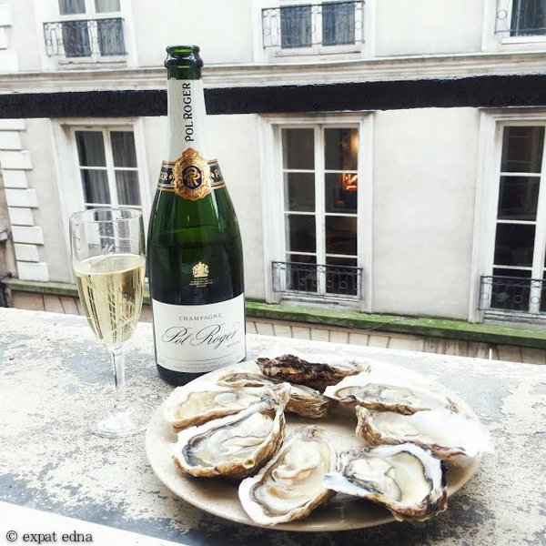

I have extracted below a section that took my fancy from an academic article about the economist Neild, whom I'd not heard of previously. It is an interesting story on its own terms and a nice illustration of how unhelpful the instinct to locate regimes or their functionality on a singular spectrum between 'government' and 'market'. They are co-dependent entities.
The English, the French and the Oyster (Neild 1995) is a succulent feast of a book, with rewards for readers of different kinds. Neild wrote the book as a result of his love of that mollusc and his interest in the evolution of its consumption. He wondered why oysters were more scarce and expensive in Britain than in France. He looked for an explanation but could not find one. So he researched the topic himself (Neild 2013b). While the book was not primarily an academic study, it dovetailed with his enduring interest in the ‘diversity of cultural evolution that shaped institutions’ (Neild 2017a, p. 6).
The book can be read
with reward by gourmets with no interest in economics, while economists and other social scientists can revel in its historical and institutional analysis of the oyster industry, as an illuminating complement to the more famous study of other common-pool resources by Nobel Laureate Elinor Ostrom (1990).11
In the middle of the 19th century, oyster production and consumption were as extensive and popular in Britain as in France. Charles Dickens in The Pickwick Papers (1836), and Henry Mayhew in his classic London Labour and the London Poor (1851), noted that oysters were plentiful and consumed by the poor as well as by the rich. The new railways brought fresh oysters from the coasts to London and other cities. Some estimates suggest that per capita oyster consumption was higher in Greater London than in France (Neild 1995, p. 30).
The railways had facilitated an increase in the demand and supply of oysters in both England and France. In both countries the result was severe over-fishing of the oyster, leading to a precipitous fall in o
yster production in England between the 1850s and the 1880s. Estimates suggest that the number of oysters sold in Billingsgate – their principal market in London – fell by 90%. During this period of overall price deflation, the nominal price of some types of oyster increased about sevenfold (Neild 1995, p. 55). France faced a similar problem.
Neild compared the responses of the French and UK governments to this mid-century crisis. He showed that differences in institutional heritage and ideological predilection led to very different recommendations and policies. The result was the near-extermination of the oyster industry in Britain but its survival and prosperity in France.
Neild (1995, p. 52) defined a ‘common property right’ in terms of ‘no exclusion of anyone from the use of a property’. This is close to Ostrom’s (1990) definition of ‘common pool resources’, although he was unaware of her work. These are ensembles of assets, which are depleted by use, but where it is too costly to exclude other users. Common-pool resources differ from public goods (such as lighthouses), which are not depleted by use but are similarly non-excludable. Club goods (such as film shows in cinemas) are by definition excludable but not depleted by use (they are non-rivalrous).
Notably, Neild thought about the solution to the commons problem in terms of the standard private versus public and market versus state distinctions, whereas Ostrom showed that other workable governance arrangements had been used. Ostrom showed in her case studies that arrangements to manage common-pool resources effectively had evolved over time, but without recourse to individ-ual property rights, market pricing or overall planning. Instead customs and rules had evolved to ensure the survival and continuing exploitation of the assets.12
In both France and England, longstanding custom and legislation had enforced a closed season in the summer months, ensuring that the oyster population could recover. But unlike the case studies in Ostrom’s book, Neild addressed a problem of common-pool resources facing massive economic and environmental pressures, obliging governments to investigate and make recommendations. The UK and French governments solicited the advice of oyster fishers and scientific experts. But the institutional conditions and the policy responses were very different.
A Royal Commission into Sea Fisheries was set up in 1866, which devoted attention to the problems with oysters, as well as to the supply of sea fish, particularly the herring. One of its three members was Thomas Henry Huxley – the famous friend and defender of Charles Darwin.13 Their report noted that a spawning oyster can produce hundreds of thousands of eggs, and wrongly inferred that the oyster shortage could not have resulted from over-fishing.14 Their report proposed that where possible oyster beds should be placed under private ownership, to encourage investment into and maintenance of the resource. But they also proposed the removal of all regulations and restrictions upon oyster fishing – including ending the closed season in the summer months (Neild 1995, p. 67). The free market should hold sway. This policy proved to be a disastrous failure. Neild (1995, pp. 71–2) commented on Huxley’s role:
After his triumphs in the Darwinian battle, Huxley’s appetite for laying down the law and striking down those with different beliefs caused him increasingly to address political and philosophical subjects which were far beyond the realms of the physical sciences and hard evidence. . . . It is the misfortune of the British oyster that it fell foul of him at that stage of his career, as well as meeting the high tide of laissez-faire.
Subsequent attempts to establish private property rights in oyster beds largely failed, because they proved to be too complex and costly as they were encumbered by the ancient entanglements and ambiguities of British property law. England had experienced a long history, from the Magna Carta of 1215 to the Glorious Revolution of 1688, where the powers of the monarch were checked by strong countervailing powers. In particular, the barons had forced King John in the Magna Carta ‘to stop enclosing the shore and seabed for his own purposes’ (Neild 1995, p. 86). But this led to a complex maze of devolved property rights. These entanglements made the recommendations of the 1866 Royal Commission unenforceable. Problems in defining property rights over the shore and seabed persist in the UK. The French response to their 19th-century oyster crisis rested on very different institutional foundations, stemming from the period before the 1789 Revolution:
In France the king stopped the private enclosure of the shore and seabed in order to make it a public domain where he – and the governments which succeeded the monarchy – were able to grant concessions and take other steps to conserve and develop the supply of oysters. . . . Thus the authoritarian actions of the French monarchy providentially furthered the interests of the producers and consumers of oysters better than the anti-authoritarian actions of English barons. (Neild 1995, p. 86)
Neild thus revealed a hardly noticed paradox concerning the development and nature of property rights in different contexts. The prevailing narrative of modern institutional economists is that clear property rights became well-established, first in England, by placing the powers of the monarch in check, thus reducing the risks of arbitrary confiscation.15 By contrast, without citing this rival narrative, Neild showed that checks on the king’s power had led to an impossible tangle of rights over the shore and seabed in the UK. Regarding France on the other side of the Channel, a prevailing account is that its centralized monarchy restricted the development of property rights, trade and industry. There is probably some truth in this, but the argument does not apply neatly to fisheries and oyster beds. Neild showed that concentrated ownership of the shore and seabed, in the hands of first the monarch and then the republican state, created the opportunity to establish clear leasehold property rights that could be exploited by the oyster producers. There are further issues concerning the comparison of the English and French political and legal systems that need to be brought into the account. Edward Glaeser and Andrei Shleifer (2002, pp. 1195) argued that in medieval England ‘judges and juries faced both physical and financial incentives to cater to the preferences of local feudal lords’. By contrast, feudal France developed a system of state-employed judges who were ‘better insulated’ from local pressures and interests: ‘France chose to rely on state-employed judges precisely because local feudal lords were too powerful.’ This does not necessarily imply that English lords were less powerful, but that France, unlike England, was capable of a centralizing state response. In France there was a massive tax-funded state bureaucracy, surmounted by a relatively more powerful king (Carruthers 1996, 23). While the 1789 Revolution dismantled much of the feudal state, Napoleon Bonaparte and others followed by building a stronger system of centralized political and legal powers in the early 19th century. Paradoxically, it was thus easier to establish clear and effective property rights over oyster resources in etatist´ France than liberal Britain. The British fostered the myth that laissez-fare was a longstanding natural condition, as proclaimed by Huxley – the influential naturalist. But in reality all property rights depend on historically specific, complex, political and legal institutions, which are not universal for all time. Property rights themselves involve several aspects or incidences (Hodgson 2015a; Honore´ 1961). Neild understood that property rights are systems of legal rules, not merely instances of control or possession, as in the manner of ‘the economics of property rights’ (Hodgson 2015b). Hence the response to an existing chaos of complex legislation and overlapping jurisdictions should not be to do nothing (as many proposed in the UK) but to ‘tidy up’ by legislative reform (Neild 1995, p. 112). In France in the 1860s the authoritarian Emperor Napoleon III accepted scientific advice on how to safeguard the oyster supply and granted concessionary seabed leases to oyster producers. Conservationist policies were further developed after the Franco-Prussian War. The two world wars in the 20th century severely interrupted French production, but it has recovered thereafter. Of course, the relative success of the policy of Napoleon III does not imply that state ownership of assets is superior in this particular case, or more generally. Neild made no such claim. Peculiar political conditions impelled the French Emperor to take a beneficial course of action. The most important overall message is that market solutions cannot work unless clear property rights concerning use, benefit and responsibility are established; historically, at least in this particular French case, the state facilitated their development. Neild also shows that the evolution of the British and French oyster industries were affected by laws and cultural practices dating back centuries. They are cases of strong, path-dependent evolution (Arthur 1989; David 1985, 1994). Neild (1995, ch. 12) related how the regulation of the British oyster industry remained in an ‘unsatisfactory condition’ until 1993 when new and better regulations were introduced as a result of membership of the Single Market of the European Union. It seems that supra-national forces are needed to shake the British oyster industry from its century of path-dependent relapse.
Great find NG.
The UK - soon to be Britian + wails + a bit ot 'ire'land will have a great time negotiating new trades deals considering...
"Marine Conservation Zones: third tranche of designations
"Detail of outcome
We received over 48,500 responses received, 98% of which were from 3 organised campaigns, alongside 964 individual responses.
The 41 sites and 12 additional features were designated on 31 May 2019."
https://www.gov.uk/government/consultations/marine-conservation-zones-third-tranche-of-designations
So three groups managed 47k response plus 900 assorted individuals or 15,000 x 3 against / with 1,000 approx plus "an impossible tangle of rights over the shore and seabed in the UK".
At a 15:1 ratio to the 900 individuals will test "singular spectrum between ‘government’ and ‘market’" and the power of the new 80 seat majority government bs market vs commons.
I will now watch as an indicator oyster outcomes after brexit. Thanks.